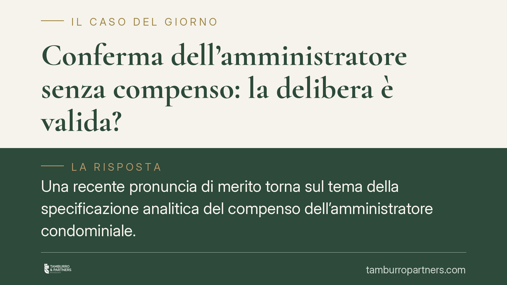

Conferma dell'amministratore senza compenso: la delibera è valida?
Una recente pronuncia di merito torna sul tema della specificazione analitica del compenso dell'amministratore condominiale. Senza l'indicazione dettagliata, la delibera di nomina o conferma rischia l'invalidità. Il punto interessa direttamente assemblee, amministratori e singoli condòmini, perché incide sulla stabilità degli atti gestori e sui termini per impugnare.

Il fatto
Il Tribunale di Catania, sez. III, è intervenuto sulla validità della delibera che conferma o nomina l'amministratore senza indicare in modo analitico il compenso. La questione non è formale: ruota attorno a una previsione introdotta dalla riforma del condominio (L. 220/2012) e alla qualificazione del vizio che ne deriva.
Gli estremi precisi della pronuncia (numero e data) non risultano allo stato pubblicamente consolidati. Per questo la trattiamo come una conferma di un orientamento di merito, non come un principio definitivo. Resta utile, però, per ricostruire una regola operativa applicabile in assemblea.
Inquadramento normativo
Il riferimento centrale è l'art. 1129 c.c. nella formulazione successiva alla L. 220/2012. La norma stabilisce che l'amministratore, all'atto dell'accettazione della nomina e del rinnovo, deve specificare analiticamente, a pena di nullità della nomina stessa, l'importo dovuto a titolo di compenso. Il dato testuale è chiaro nel sanzionare con la nullità l'omessa specificazione; la collocazione esatta del comma può variare nelle diverse edizioni del codice, ma la regola sostanziale è stabile: il compenso va indicato voce per voce, comprese le attività straordinarie.
La qualificazione del vizio merita cautela. Le Sezioni Unite della Cassazione (sent. n. 9839/2021) hanno ridisegnato il riparto tra delibere nulle e annullabili in materia condominiale, restringendo l'area della nullità ai casi più gravi (oggetto impossibile o illecito, materie estranee alle competenze assembleari, incidenza su diritti individuali). Dopo questa pronuncia, parte della giurisprudenza riconduce i vizi sul compenso all'annullabilità, soggetta al termine di impugnazione di trenta giorni (art. 1137 c.c.); altra parte valorizza la nullità testuale prevista espressamente dall'art. 1129 c.c. Il quadro, dunque, non è univoco.
La distinzione ha conseguenze pratiche rilevanti:
- la delibera annullabile va impugnata dal condòmino assente o dissenziente entro trenta giorni, decorso il quale si consolida;
- la delibera nulla, secondo l'orientamento che valorizza il dato testuale dell'art. 1129 c.c., può essere contestata senza il limite dei trenta giorni.
Quanto ai quorum, la nomina dell'amministratore rientra tra le delibere dell'art. 1136, comma 4, c.c., che rinvia al comma 2: occorre il voto della maggioranza degli intervenuti che rappresenti almeno la metà del valore dell'edificio (500 millesimi). Lo stesso regime vale per la conferma.
Implicazioni pratiche
Per l'amministratore, presentare un preventivo analitico non è un adempimento burocratico: è la condizione di stabilità del proprio incarico. Un compenso indicato in modo cumulativo o generico espone la delibera a contestazione.
Per i condòmini, il margine di azione dipende dalla qualificazione del vizio. Se prevale la tesi dell'annullabilità, il termine di trenta giorni è perentorio e va presidiato. Se prevale la nullità, i tempi si dilatano, ma resta opportuno agire tempestivamente per evitare incertezze.
Un punto va sfumato. L'eventuale invalidità della delibera di nomina non travolge automaticamente ogni atto compiuto dall'amministratore verso l'esterno. L'ordinamento tutela l'affidamento dei terzi in buona fede che abbiano contrattato con chi appariva legittimato a gestire il condominio. La caducazione della nomina opera sul piano interno; gli effetti verso terzi vanno valutati caso per caso e non si dissolvono in modo retroattivo e indiscriminato.
Cosa fare in concreto
- Pretendete il preventivo analitico. Verbalizzate il compenso voce per voce, distinguendo l'attività ordinaria da quella straordinaria, prima del voto.
- Verificate i quorum. Accertate che la nomina o la conferma raggiunga la maggioranza degli intervenuti e almeno 500 millesimi (art. 1136, commi 2 e 4, c.c.).
- Presidiate il termine di trenta giorni. Se la delibera è carente sul compenso, valutate l'impugnazione entro il termine, senza affidarvi alla sola tesi della nullità, oggi controversa.
- Riconvocate l'assemblea quando il vizio è emendabile: una nuova delibera con compenso specificato sana la situazione per il futuro.
- Conservate la documentazione. Verbale, preventivo e accettazione dell'incarico vanno archiviati con cura: sono gli atti su cui si misura la validità della nomina.
Disclaimer
Contributo informativo a cura di Tamburro & Partners - Avv. Giuseppe Tamburro. Non costituisce parere legale.
Ogni condominio ha una storia a sé.
Se gestisci un'amministrazione e vuoi un confronto su una specifica questione condominiale, scrivi allo studio. Ti rispondiamo entro un giorno lavorativo.